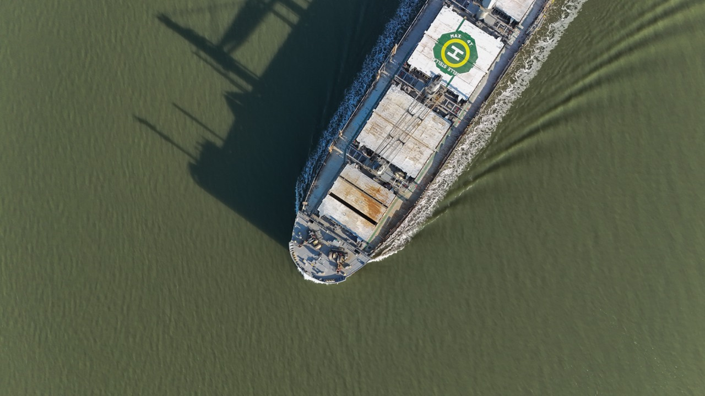
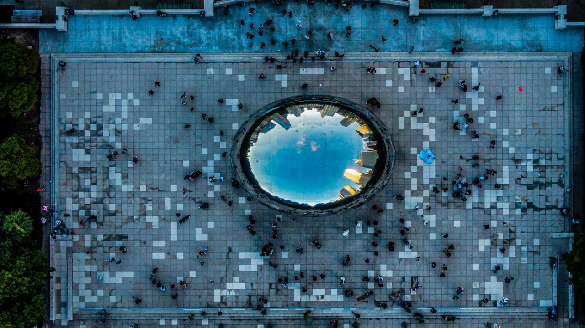
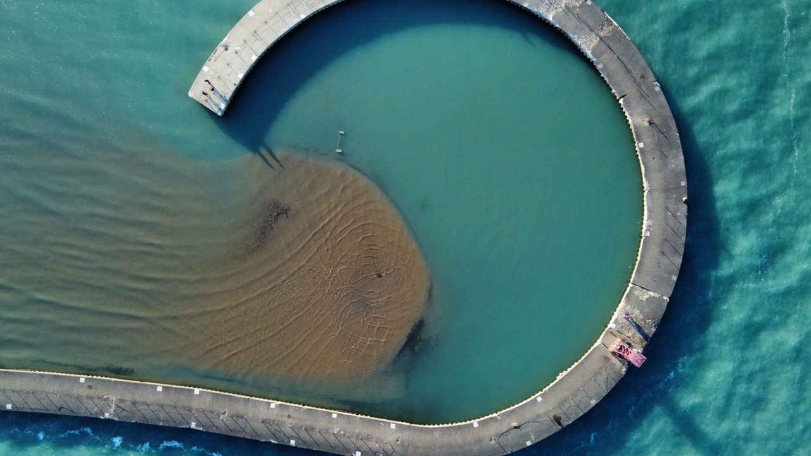
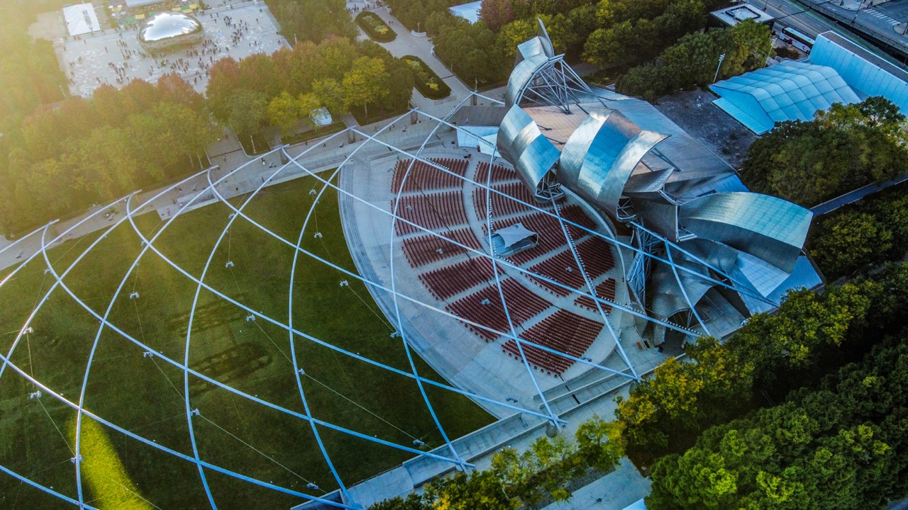
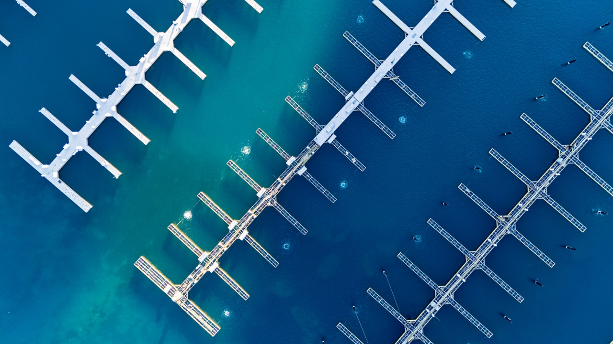
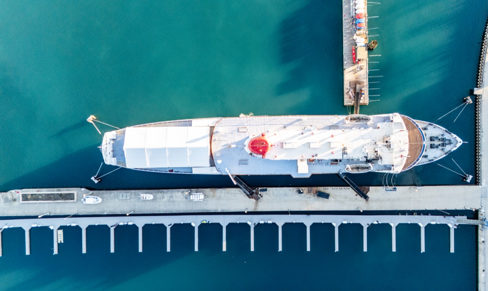

04 / Photography
A different
perspective.
A space for photography, observation, and the moments worth looking at a little longer.
Selected photographs / CJ Haydon
Patterns. Places.
A new perspective.
Architecture, water, and the geometry of everyday places.
Select
a photograph to view it in full.

Ship in motion
01
City reflections
02
Water & stone
03
Garden geometry
04
An open-air stage
05
Lines on the water
06
At the dock
07New Perspectives Aerial Photography / Jan 2023 – Aug 2025
Aerial images.
An independent business.
I founded New Perspectives Aerial Photography after earning my FAA Part 107 Remote Pilot Certificate.
Based in the Greater Chicago Area, I created abstract and landscape photographs of nature and landmarks using drone technology.
Exhibitions & outreach
My work was included in the Highland Park Art Center’s “Focus and Click” exhibition in March 2024. I also spoke to hundreds of people across Chicagoland through educational presentations about drones and the story behind my business.
Another point of view
Photography
meets flight.
My UAS flight labs include aerial video work for a Purdue University promotional project. Explore that project alongside the aircraft involved.
Explore the flight labs